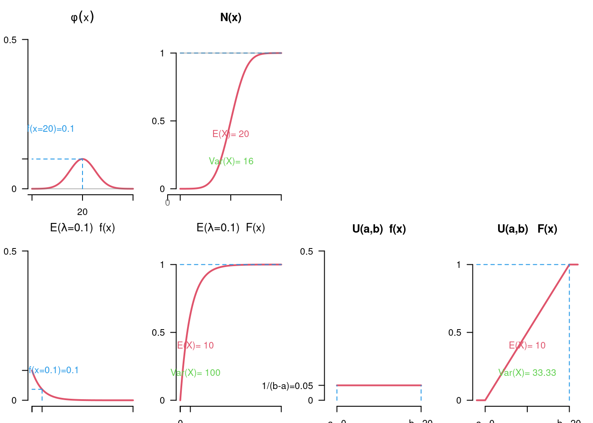

Chapter 5 Parameter estimation
To answer the question about inferences about the population regarding parameter estimation, let’s take a close look at distributions of estimators like \(\bar X\) to find some criteria of “good” estimators to define and quantify the uncertainty of the estimate.
In this chapter we will learn:
- What properties should we require of the estimators we use,
- which point estimators are suitable for which parameters and
- how to construct tailor-made estimation functions or
- how to take the uncertainty of the estimate into account in the estimation procedure \(\leadsto\) interval estimation.
5.1 Basic ideas of inductive statistics
In inductive statistics, we want to generalize our findings, which are based on a single sample, on the whole population of interest. With the help of random sampling and appropriate estimators, we conduct inference for parameters of interest in the population.
Exercise 5.1 (Basic Concepts)
5.1.1 Parameter estimation theoretically
Before we conduct any data analysis, we think of a model for a real-world problem.
Example 5.1 (New customers) You want to expand your customer base to a specific population group and are interested in:
to what proportion will the new customers use the app (\(Y\)), specifically: what would be the proportion of app users in your new customer base (\(p\)),
what average sales/invoice amount can you expect from new customers (\(X\)), specifically: what would be the average invoice amount of your new customers (\(\mathbb E(X)=\mathbb \mu_X\)).
\(X\) and \(Y\) are random variables. We are interested in the distribution parameters of these random variables. We will build upon the following concept of a random sample…
Modeling the quantities of interest
- App usage is the property of interest, so:
\[ Y=\begin{cases}1,&\text{if app usage},\\0,&\text{no app usage}.\end{cases} \] \(Y\sim Ber(p)\). Of interest is the share of app users (\(p\)).
- Invoice amount is size \(X\) and the average invoice amount is of interest: \(\mathbb E(X)=\mu_x\).
Random sample
We have often talked about a sample and have seen how sampling can be modeled (See “Random events and Probability”). Now we formally define what we mean by a random sample as a random process.
Let \(X_1,\ldots, X_n\) be random variables. \((X_1,\ldots, X_n)\) is called a random sample of size \(n\) (sample variables) to \(X\) if the distributions of \(X\) and \(X_i\), \(i=1,2,\ldots, n\), match and \(X_1,\ldots, X_n\) are independent.
The observed realization \((x_1,\ldots, x_n)\) of random sample \((X_1,\ldots, X_n)\) is called a sample realization. The set \(\mathcal X\) of all possible sample realizations is called the sample space: \(\mathcal X\subseteq\mathbb R^n\).
Example 5.2 (New customers) Example 5.1 cont.
The plan is to randomly select \(n\) customers and survey them.
- App Usage:
The sample variables for \(Y\) are: \(\color{blue}{Y_1, Y_2,\ldots,Y_n},\) where \(Y_i\) takes the value 1 or 0, depending on whether the \(i\)th selected person uses the app or not. So the value of \(Y_i\) is initially unknown because we don’t know which person will be interviewed in the \(i\)th position.
\(\leadsto\) \(Y_1,\ldots, Y_n\) are random variables!
- Invoice amount: The sample variables for \(X\) are: \({\color{red}{X_1, X_2,\ldots,X_n}},\) where \(X_i\) represents the estimate of the bill amount of the \(i\)th selected person. So the value of \(X_i\) is initially unknown because we don’t know which person will be interviewed in the \(i\)th position.
\(\leadsto\) \(X_1,\ldots, X_n\) are random variables!
Estimation
In descriptive statistics we have used the formulas for computing the empirical mean and the empirical frequencies in order to summarize the sample given. Now we look at those formulas from the probabilistic point of view, realize that there are many possible samples from a population and the formulas (which correspond to estimators) return different values depending on a particular sample realization.
Example 5.3 (New customers) Example 5.2 cont.
Calculation formulas (estimators) for the parameters of interest:
the app user share \(p\): \[\begin{align} \color{blue}{\overline{Y}}&\color{blue}{=\frac 1n (Y_1 + Y_2 + \ldots Y_n)} \leadsto\color{blue}{\frac{\text{Number of 1s (=app usage)}}{\text{Number of values}}}\\ &\color{blue}{= \text{Sample frequency of ones (=app usage)}} \end{align}\]
the average invoice amount (\(\mathbb E(X)\)): \[\color{red}{\overline{X}=\frac 1n (X_1 + X_2 + \ldots X_n) \leadsto\text{sample mean}}.\]
\(\overline{Y}\) and \(\overline{X}\) are functions of the sample variables, so they are themselves random variables.
5.1.2 Parameter estimation practically
Let us return to our estimation problem. Assume the proportion of app users is \(0.6\) and the mean invoice amount in the population of all potential new customers is \(25\) Euro. In the reality we do not know those values and we have to estimate them.
So imagine, we conduct a survey among the potential new customers and ask the survey participants to indicate whether they would use the app or not, and how high would be their willingness to pay.
Example 5.4 (New customers) Example 5.3 cont.
We need to set the sample size (\(n\)) and then conduct a survey to get concrete sample values (\(x_i\) and \(y_i\) for \(i=1,\ldots,n\)).
In the animation you can see what happens when a sample is taken:
Sample size \(n\):
Sample realizations:
-
The survey results for App usage (yes/no) as realized sample values:
\(\color{blue}{\{1,2,\ldots, n\}=} ~\)
-
As realizations of the corresponding 0-1 Bernoulli random variable:
\(\color{blue}{\{y_1,y_2,\ldots,y_n\}=}~\)
-
Willingness to pay in form of self-estimated invoice amount with sample values:
\(\color{red}{\{x_1,x_2,\ldots,x_n\}=}~\)
Calculation of the resulting estimates:
-
The estimate for the proportion of app users:
\(\color{blue}{\bar y=\frac 1n(y_1+y_2 + \ldots + y_n)=}\)
-
The estimate for the average invoice amount:
\(\color{red}{\bar x=\frac 1n(x_1+x_2 + \ldots + x_n)= }\)
5.2 Point estimation
The aim of a point estimate is to provide the most accurate possible approximation value for an unknown population parameter.
Parameters come in two forms:
Characteristics of an arbitrary, unknown distribution (\(\leadsto \mathbb E(\cdot), \text{Var}(\cdot), \rho, q_p,\ldots\))
Parameters of an assumed distribution model (\(\leadsto p \text{ of the Bernoulli distribution }, \lambda \text{ of the Poisson distribution },\ldots\)).
For both types of parameters there exist estimation functions or estimators (formulas from the descriptive statistics) that provide a point estimate for a given sample. In the case of a distribution model, such estimators can be constructed.
5.2.1 Estimation functions
Assume that a parameter \(\theta\) is to be deduced from the realizations in the sample (e.g. distribution parameter).
A function: \[\begin{equation*} T=g(X_1,\ldots, X_n) \end{equation*}\] of the random sample \((X_1,\ldots, X_n)\) an estimation function for \(\theta\). As a function of random variables, \(T\) is itself a random variable.
There two types of estimation functions, that we will be talking about:
- estimator if it is an estimator of a distribution parameter;
- test statistics in case of hypotheses testing.
Example 5.5 (Examples of estimators) We already know the following estimation functions quite well:
\(\displaystyle\overline X = \frac{1}{n} \sum_{i=1}^n\)
\(\displaystyle \overline X = \frac{1}{n} \sum_{i=1}^n\) Probability of occurrence \(\mathbb P(X=1)\).
\(\hat\sigma_X^2=\displaystyle S_X^2 = g(X_1,\ldots, X_n) = \frac{1}{n-1}\sum_{i=1}^n (X_i-\overline X )^2\) is estimator for the variance \(\sigma_X^2=\text{Var}(X)\).
A point estimate for \(\theta\) is a function of realizations of the form \[t=g(x_1,\ldots, x_n).\]
The resulting numerical value \(g(x_1,\ldots, x_n)\) is called estimate. For example, \(g(x_1,\ldots, x_n)=\displaystyle \frac{1}{n}\sum_i x_i\) is an estimate for expected value \(\theta=\mathbb E X\).
5.2.2 Properties of estimators
What characterizes a “good” estimator?
For example, which properties justify the estimator \(\overline X\) as an estimator of the expected value?
The following properties provide clear criteria for the quality of an estimator:
- Unbiasedness
- Consistency
- Efficiency
5.2.2.1 Unbiasedness
An estimate should tend to deliver the correct value, i.e. neither systematically overestimate nor underestimate. An estimator \(T=g(X_1,\ldots, X_n)\) for the parameter \(\theta\) is called unbiased if holds \[\begin{equation*} \mathbb E(T) = \theta. \end{equation*}\]
The bias refers to the systematic overestimation or underestimation of an estimator: \[\begin{equation*} \text{Bias}(T) = \mathbb E(T) - \theta. \end{equation*}\]
Example 5.6 (Unbiasedness of the sample mean) We check whether the sample mean \(\bar X\) is unbiased for \(\mathbb E(X)\) and the relative frequency (\(h_{Y=1}=\bar Y\), \(Y\in\{0;1\}\) ) are unbiased for \(\mathbb P(Y=1)\).
\(\overline X=\displaystyle \frac{1}{n} \sum_{i=1}^n\) because \[\begin{equation*} \mathbb E(\overline X) = \frac{1}{n} \sum_{i=1}^n \mathbb E(X_i) = \frac{1}{n} n\cdot \mu = \mu. \end{equation*}\]
The relative frequency \(H_{Y=1}=\displaystyle \overline Y=\displaystyle\frac{1}{n}\sum_{i=1}^n Y_i\), with \(Y_i\in \{0,1\}\), is unbiased estimator for the share value/ the probability of occurrence \(\mathbb P(Y=1)\). \[\begin{equation*} \mathbb E(\overline Y) = \frac{1}{n} \sum_{i=1}^n \mathbb E(Y_i) = \frac{1}{n} \sum_{i=1}^n \mathbb P(Y_i=1)\frac{1}{n} n\cdot \mathbb P(Y=1) = \mathbb P(Y=1). \end{equation*}\]
If we now take several random samples (e.g. \(100\)) and calculate the sample mean for each drawing with a certain size \(n\), then we observe the following:

Example 5.7 (Sample variance and mean square deviation) What about the variance estimators?
Sample variance: \[\begin{equation*} S^2 = \frac{1}{n-1} \sum_{i=1}^n (X_i-\overline X)^2 \end{equation*}\] is an unbiased estimator for the variance \(\sigma^2=\text{Var}(X)\), i.e. \(\mathbb E(S^2) = \sigma^2\).
For the mean square deviation \(\displaystyle \tilde S^2 = \frac{1}{n}\sum_{i=1}^n (X_i-\overline X)^2\) applies: \[\begin{equation*} \mathbb E(\tilde S^2) = \frac{n-1}{n} \sigma^2. \end{equation*}\] So: \(\tilde S^2\) is biased (it is asymptotically unbiased since the bias disappears for increasing \(n\)). The distortion is \[\begin{equation*} \text{Bias}(\tilde S^2) = \mathbb E(\tilde S^2) - \sigma^2 = -\frac{1}{n}\sigma^2. \end{equation*}\]
Proof: Mean square deviation is biased üëΩ
- The following applies: \(\displaystyle \mathbb E((X_i-\mu)(X_j-\mu))=0\) if \(i\not=j\).
- Furthermore: \[\begin{equation*} \mathbb E((\overline X-\mu)^2) = \text{Var}(\overline X) = \frac{1}{n^2} \text{Var}(X_1+\cdots+X_n) = \frac{1}{n}\sigma^2. \end{equation*}\] This results in: \[\begin{align*} \mathbb E((X_i-\overline X)^2) &= \mathbb E(((X_i-\mu) - (\overline X-\mu))^2) \\ &= \sigma^2 -2 \mathbb E\left((X_i-\mu) \left(\frac{1}{n} \sum_{j=1}^n X_j-\mu\right)\right) + \frac{\sigma^2}{n} \\ &= \sigma^2 - \frac{2}{n} \sum_{i=1}^n \mathbb E((X_i-\mu)(X_j-\mu)) + \frac{\sigma^2}{n} \\ &= \sigma^2 - \frac{2\sigma^2}{n} + \frac{\sigma^2}{n} = \sigma^2 - \frac{\sigma^2}{n}. \end{align*}\]
- If we now carry out several samplings (e.g. \(100\)) and calculate the sample variance and the mean square deviation for each drawing with a certain size \(n\), then we observe the following:
5.2.2.2 Consistency
Another important property of an estimator is consistency, which states that the estimator converges to the quantity being estimated. This definition takes into account the variance and the bias of the estimator; the two sizes should approach zero as the sample size \(n\) increases.
Formally, consistency is defined by the convergence of the expected mean square deviation. The expected mean square error is determined by \[\begin{equation*} \text{MSE}(T)= \mathbb E((T-\theta)^2). \end{equation*}\]
It can be expressed as \[\begin{equation*} \text{MSE}(T) = \text{Var}(T) + \text{Bias}(T)^2. \end{equation*}\]
An estimator is said to be consistent if: \[\begin{equation*} \text{MSE} \rightarrow 0\text{ for } n\rightarrow\infty. \end{equation*}\]
Example 5.8 (Consistency of the sample mean) From independent, identically distributed observations \(X_1,\ldots, X_n\) with \(\mathbb E(X_1)=\mu\) and \(\text{Var}(X_1)=\sigma^2\) the expected value is estimated by \(\overline X=\displaystyle\frac{1}{n} \sum_{i=1}^n X_i\).
\(\mathbb E(\overline X)=\mu\) (See unbiasedness of \(\bar X\) \(\leadsto \text{Bias}(\overline X)=0\))
\(\text{MSE}(\overline X) = \text{Var}(\overline X) + \text{Bias}^2(\overline X)=\frac{\sigma^2}{n} + 0^2 {\rightarrow}0\) for \({n\rightarrow\infty}\) (\(\leadsto\) consistency)
5.2.2.3 Efficiency
An unbiased estimator for \(\theta\) is more efficient than another unbiased estimator if it has the smaller variance.
Efficiency means that of two unbiased estimators \(T_1\) and \(T_2\) for \(\theta\), one (here \(T_1\)) is more efficient if: \[\begin{equation*} \text{Var}(T_1)\leq \text{Var}(T_2) \end{equation*}\]
The most efficient or best estimator is the unbiased estimator that has the smallest variance.
- \(\overline X\) is efficient for the expected value;
- \(\overline X\), with \(X_i\in\{0,1\}\) is efficient for \(\mathbb P(X=1)\);
- \(\overline X\) is efficient for the parameter \(\lambda\) of the Poisson distribution.
5.3 Construction of estimators
We already have good estimators for the most important parameters of distributions (expectation and variance). But what do we do if we want to estimate unknown parameters of a distribution model? It’s not always possible to “google” a suitable estimator.
There are two useful methods to construct the estimators for the unknown parameters of a distribution model.
5.3.1 Method of moments
Basic idea: Estimate parameters of the distribution such that the corresponding moments of the distribution \(\mathbb E(X), \mathbb E(X^2), \ldots\) match with the corresponding empirical moments of the sample \(\bar X, \overline{X^2}, \ldots\):
\[ \begin{array}{lp{.5cm}l} \hline \text{Distribution} & & \text{Sample}\\\hline \mathbb E(X)=\mu && \displaystyle \overline x=\frac{1}{n}\sum_{i=1}^n x_i\\ \mathbb E(X^2) = \mu^2 + \sigma^2 & & \displaystyle \overline{x^2}=\frac{1}{n}\sum_{i=1}^n x_i^2\\ \vdots & & \vdots\\ \mathbb E(X^m) & & \displaystyle \overline{x^m}=\frac{1}{n} \sum_{i=1}^n x_i^m\\\hline \end{array} \]
Starting with the first moment, just enough moments are included so that all parameters to be estimated can be clearly estimated.
Example 5.9 (Bernoulli distribution) Estimation of the parameter \(p\) of a Bernoulli distribution.
Theoretically:
- Distribution assumption: \(\mathbb P\in\{B(1,p) | p\in \Theta=[0,1]\}\)
- First moment of the distribution: \(\mathbb E(X) = p\)
- First moment of the sample: \(\bar X = \frac 1n \sum_{i=1}^n X_i\)
- Estimator: \(\hat p = \overline X\) (proportion of “successes” in the sample)
Practical: Estimation of the app user share based on a customer survey.
- From the sample: \(\bar x = 0.55\)
- Estimate: \(\hat p=0.55\)
Example 5.10 (Exponential distribution) Estimation of the parameter \(\lambda\) of an exponential distribution.
Theoretically:
- Distribution assumption: \(\mathbb P\in\{E(\lambda)| \lambda>0\}\)
- First moment of the distribution: \(\mathbb E(X) = \displaystyle\frac{1}{\lambda}\)
- First moment of the sample: \(\bar X = \frac 1n \sum_{i=1}^n X_i\)
- Estimator: \(\hat\lambda = \displaystyle\frac{1}{\overline X}\) (because then: \(\overline X = \displaystyle \mathbb E(X) = \frac{1}{\lambda}\) )
Practical: estimate the \(\lambda\) for the transaction duration.
- From the sample: \(\bar x = 9.5\)
- Estimate: \(\hat \lambda=\frac1{9.5}=0.1053.\)
Example 5.11 (Normal distribution) Estimation of the parameters \((\mu,\sigma^2)\) of a normal distribution.
Theoretically:
- Distribution assumption: \(\mathbb P\in\{N(\mu,\sigma^2)|\mu\in \mathbb R, \sigma^2>0\}\)
- First moment of the distribution: \(\mathbb E(X) = \mu\)
- First moment of the sample: \(\bar X = \frac 1n \sum_{i=1}^n X_i\)
- Second moment of the distribution: \(\mathbb E(X^2) = \mu^2 + \sigma^2\)
- Second moment of the sample: \(\overline{X^2} = \frac 1n \sum_{i=1}^n X^2_i\)
- Inserting the empirical moments gives: \(\hat\mu=\overline X\) and \(\hat\sigma^2 = \tilde S^2\)
Practical: distribution parameters for the average temperature in July.
- From the sample: \(\bar t = 20.5\); \(\tilde s_T^2 = 12\)
- Estimated value: \(\hat \mu_T=20.5\); \(\hat\sigma_T^2=12\).
Exercise 5.2 (The method of moments)
5.3.2 Maximum likelihood method
Let \(X_1,\ldots, X_n\) be independent, identically distributed random variables. The distribution of \(X_i\), \(i=1,\ldots, n\) is unknown, but we assume that the distribution belongs to a distribution model that characterizes \(\theta\) by an appropriate parameterization is.
That is, \(X_i\) has probability function or density \(f(x|\theta)\), \(\theta\in\Theta\), where \(\theta\) is a vector of parameters from the set \(\Theta\).
The maximum likelihood principle states:
For the sample result \((x_1,\ldots, x_n)\), choose the value \(\hat\theta\) as the estimated value for \(\theta\), below which the probability of the sample result occurring is greatest.
The sentence “under which the probability of the outcome occurring is greatest” can be replaced by: “under which the corresponding probability function or density is maximum”. The latter is quantified using the likelihood function:
If a realization \((x_1,\ldots, x_n)\) is given, the density can be determined as a function of the unknown parameters \(\theta\) comprehend \[\begin{equation*} L(\theta)= f(x_1,\ldots, x_n|\theta). \end{equation*}\]
Because of the independence of the random sample, the following applies to the joint probability function / density: \[\begin{equation*} L(\theta)=f(x_1,\ldots, x_n|\theta) = f(x_1|\theta)\cdot f(x_2|\theta)\cdot \dots \cdot f(x_n|\theta). \end{equation*}\]
The Maximum Likelihood Principle says: for \(x_1,\ldots, x_n\), choose as parameter estimate the parameter \(\hat\theta\) for which the likelihood is maximum, i.e. \[\begin{equation*} L(\hat\theta)=\max_{\theta} L(\theta), \end{equation*}\] or \[\begin{equation*} f(x_1,\ldots, x_n|\hat\theta) = \max_{\theta} f(x_1,\ldots, x_n|\theta). \end{equation*}\]
For the given realizations \(x_1,\ldots, x_n\), one chooses the parameter \(\hat\theta\) for which the probability or density that these values ​​occur is maximum. These are the parameters \(\theta\) that provide the most plausible explanation for how these values ​​came about. The estimate depends in particular on the sample: \(\hat\theta=\hat\theta(x_1,\ldots, x_n)\).
The estimating function \(g(x_1,\ldots, x_n)=\hat\theta(x_1,\ldots, x_n)\) is called maximum likelihood estimator (ML estimator).
To practically determine the maximum, one often chooses the logarithm of the likelihood function, the log-likelihood, as this converts the product of the densities into a sum: \[\begin{equation*} \mathcal L(\theta) = \ln L(\theta) = \sum_{i=1}^n \ln f(x_i|\theta). \end{equation*}\] Because of the strict monotonicity of the logarithm, maximizing \(L(\theta)\) and \(\ln L(\theta)\) yield the same value \(\hat\theta\).
Example 5.12 (ML: Bernoulli distribution) Randomly select \(n=4\) customers from a customer pool with \(a\) app users and \(w\) web users (with replacement); \(p=\displaystyle\frac{a}{a+w}\) unknown.
Construction:
- So: \(4\) independent repetitions of the Bernoulli random process.
- The sample is \(x_1=1\), \(x_2=1\), \(x_3=0\), \(x_4=1\):
- Likelihood function: \[\begin{equation*} L(p) = f(x_1|p) \cdots f(x_4|p) = \prod_{i=1}^4 p^{x_i}(1-p)^{1-x_i} = p\cdot p\cdot (1-p)\cdot p = p^3\cdot (1-p). \end{equation*}\]
- Deriving and setting to zero results in: \[\begin{equation*} L'(p) = 3p^2 (1-p) - p^3 = (3-4p)p^2 = 0 \iff p\in \left\{0,\frac{3}{4}\right\}. \end{equation*}\]
- Maximum at \(p^\ast=3/4\) (negative second derivative).
Representation of the likelihood function:
- Interpretation of the likelihood function: \(L(p)\) is the probability of the observations \(x_1=1,x_2=1, x_3=0\) and \(x_4=1\) occurring together under the assumption that \(\mathbb P(X =1)=p\).
Example 5.13 (ML: Exponential distribution) Let \(X_1,\ldots, X_4\) be independent repetitions of an exponentially distributed quantity with estimated value \(\lambda\).
Construction:
- Sample: \(x_1=0.95\), \(x_2=1.81\), \(x_3=1\), \(x_4=0.67\)
- Likelihood function: \[\begin{equation*} L(\lambda) = f(x_1|\lambda)\cdots f(x_4|\lambda) = \prod_{i=1}^4 \lambda \text e^{-\lambda x_i} = \lambda^4 \text e^{-\lambda (x_1+\cdots + x_4)} = \lambda^4 \text e^{-4.43\lambda} \end{equation*}\]
- Log likelihood function: \(\displaystyle \mathcal{L}(\lambda) = \ln L(\lambda) = -4.43\lambda + 4 \ln(\lambda)\)
- Derive and zero: \[\begin{equation*} \mathcal{L}^\prime(\lambda) = -4.43 + \frac{4}{\lambda} = 0 \quad \iff \quad \lambda=4/4.43 = 0.9029 \end{equation*}\]
- Second derivative: \(\displaystyle -\frac{4}{\lambda^2}<0\), i.e. maximum.
- \(\hat\lambda=1/\overline X = 1/1.1075=0.902935\).
Representation of the likelihood function and log-likelihood function:
Interpretation of the likelihood function: \(L(\lambda)\) is the density for the co-occurrence of the observations \(x_1=0.95\), \(x_2=1.81\), \(x_3=1\) and \(x_4=0, 67\) under the assumption that there is an exponential distribution with parameter \(\lambda\).
A high density value \(f(x)\) at location \(x\) implies a high probability of occurrence in a small interval around \(x\).
Exercise 5.3 (The maximum likelihood method)
5.4 Interval estimation
The point estimate provides a parameter estimate \(\hat\theta\), which is typically not the same as the true value \(\theta\). In addition to the estimate \(\hat\theta\) itself, one can specify the precision of the estimator by taking into account the variability of the estimator.
The Interval Estimation is a way to directly incorporate the accuracy of the estimation process. The result of the estimation is an interval. However, it is not really possible to hit the true parameter with certainty. The error probability \(\alpha\), with which the method returns an interval that does not contain the true value \(\theta\), is given. Common values \(\alpha\) are \(\alpha=0.1\), \(\alpha=0.05\) and \(\alpha=0.01\).
The coverage probability/confidence level \(1-\alpha\) is the probability that the procedure returns an interval that contains the value \(\theta\).
Since the width of such an interval can also be understood as the accuracy of the estimate, the sample size, which ensures a certain level of accuracy at the given level of certainty, can be derived from it. ***
Example 5.14 (Estimate the average invoice amount (Rechnungsbetrag)) Our estimator - the sample mean \(\bar{X}=\frac 1n \sum_{i=1}^n\). The values fluctuate less as the sample size \(n\) increases.
But how exactly is the relationship to the sample size?
The answer is provided by the central limit theorem (CLT). If the sample variables \(X_1,X_2,\ldots, X_n\) are identical and independently distributed with a finite mean \(\mu_X\) and a finite variance \(\sigma_X^2\), the approximate distribution of sample mean is: \[\bar{X} \stackrel{a}{\sim} N(\mu_X, \frac{\sigma_X^2}{n})\] or in its standardized version: \[\frac{\bar X-\mu_X}{\sigma_X/\sqrt{n}}\stackrel{a}{\sim}N(0;1).\]
The sample size depends on the unknown variance in the population. In practice, an estimate of the variance is used. You should assume a rather higher value.
- Assuming \(\sigma_X=100\) is known or determined by experience and \(n=50\), therefore \(\frac{\sigma_X^2}{n}=\frac{100}{50}=2\), then according to CLT : \[\bar{X}\stackrel{a}{\sim} N(\mu_X; 2)\text{ or }\frac{\bar X-\mu_X}{\sqrt 2}\stackrel{a}{\sim} N(0;1)\]
I.e. \(\mathbb P\left(-1.96\leq\frac{\overline X-\mu_X}{\sqrt 2}\leq1.96\right)=0.95\leftrightarrow\) \(\mathbb P\left(-1 .96\cdot \sqrt 2\leq \overline X-\mu_X\leq1.96\cdot \sqrt 2\right)=0.95\) and with 95% probability the values of \(\bar x\) away from \(\mu_X\).
- Rearranging the inequalities within the probability according to \(\mu_X\) gives:
\[\begin{align} \mathbb P\left(-1.96\cdot \sqrt 2\leq \bar X-\mu_X\leq 1.96\cdot \sqrt 2\right)&=0.95~~ |\leadsto -\bar X\\ \mathbb P\left(-\bar X-1.96\cdot \sqrt 2\leq-\mu_X\leq -\bar X+1.96\cdot \sqrt2\right)&=0.95~~|\leadsto :(-1)\\ \mathbb P\left(\bar X+1.96\cdot \sqrt 2\geq\mu_X\geq \bar X-1.96\cdot \sqrt 2\right)&=0.95~~|\leadsto \text{swipping the sides}\\ \mathbb P\left(\bar X-1.96\cdot \sqrt 2\leq\mu_X\leq \bar X+1.96\cdot \sqrt 2\right)&=0.95 \end{align}\]
With 95% probability, the above term guarantees us that the unknown parameter \(\mu_X\) is somewhere between \(\bar X-1.96\cdot \sqrt 2\) and \(\bar X+1.96\cdot \sqrt 2\).
Now \(\bar X-1.96\cdot \sqrt 2\) and \(\bar X+1.96\cdot \sqrt 2\) are random variables and the values vary with each new sampling.
For a concrete sampling, you can calculate the values \(\overline x-1.96\cdot \sqrt 2\) and \(\overline x+1.96\cdot \sqrt 2\) and get an estimation interval for \(\mu_X\) as a result:
\[ [\overline x-1,96\cdot \sqrt 2; \overline x+1,96\cdot \sqrt 2]. \]
- or for a general sample size (\(\text{Var}(\overline X) = \sigma^2/n\) \(\leadsto \sqrt{\text{Var}(\overline X)} = \sigma/\sqrt n\)):
\[ \left[\overline x-1,96\cdot \frac{10}{\sqrt n}; \overline x+1,96\cdot \frac{10}{\sqrt n}\right]. \]
Sample size \(n\):
Sample realizations:
-
Willingness to pay in form of self-estimated invoice amount with sample values:
\(\color{red}{\{x_1,x_2,\ldots,x_n\}=}~\)
Calculation of the resulting estimates:
-
The estimate for the average invoice amount:
\(\color{red}{\bar x=\frac 1n(x_1+x_2 + \ldots + x_n)= }\)
-
The interval estimate for the average invoice amount:
\(\color{blue}{\left[\overline x-1,96\cdot \frac{10}{\sqrt n}; \overline x+1,96\cdot \frac{10}{\sqrt n}\right]}=[\)\(\color{blue}{]}\)
Repeated sampling and interval calculation for the given coverage probability \(1−\alpha\) gives on average approximately a \((1−\alpha)\) proportion of the interval estimates that cover the true parameter.
For our example 5.14 we want to estimate \(\mu_X\) using a sample of size \(n=50\) and assuming \(\sigma_X=10.\) Then, a collection of \(100\) repeated interval estimates for \(\alpha=0.05\) could look like this:
5.4.1 \((1-\alpha)\) confidence interval for \(\mu\)
Type A: Confidence interval for \(\mu\) with known variance \(\sigma^2\) (\(N(\mu,\sigma^2)\)-distributed random variables)
The starting point is the point estimator \(\overline X\), which is \(N(\mu,\sigma^2/n)\)-distributed.
The standardized sample mean \(\displaystyle\frac{\overline X-\mu}{\sigma/\sqrt{n}}\) is \(N(0,1)\)-distributed; therefore: \[\begin{equation*} \mathbb P\left(-N_{1-\alpha/2} \leq \frac{\overline X-\mu}{\sigma/\sqrt{n}}\leq N_{1-\alpha/2}\right)=1-\alpha, \end{equation*}\] with \(N_{1-\alpha/2}\) the \(1-\alpha/2\) quantile of the standard normal distribution.
Forming results in: \[\begin{equation*} 1-\alpha = \mathbb P\left(\overline X - N_{1-\alpha/2} \frac{\sigma}{\sqrt{n}} \leq \mu \leq \overline X + N_{1-\alpha/2} \frac{\sigma}{\sqrt{n}}\right), \end{equation*}\] and a \((1-\alpha)\) confidence interval is given by \[\begin{equation*} \left[\overline X - N_{1-\alpha/2} \frac{\sigma}{\sqrt{n}}, \overline X + N_{1-\alpha/2} \frac{\sigma}{\sqrt{n}}\right]. \end{equation*}\]
Example 5.15 (Monthly returns) Given: monthly returns of a stock \(A\)
random monthly return \(X\sim N(\mu,\sigma^2)\) with \(\sigma^2 = 0.25\)
Data: \(12\) monthly returns in \(\%\)
\[\begin{array}[t]{|*{4}{cc|}} \hline n & x_n & n & x_n & n & x_n & n & x_n \\\hline 1 & 0.35 & 4 & \phantom{-}0.52 & 7 & -0.48 & 10 & 0.29\\ 2 & 0.89 & 5 & \phantom{-}0.12 & 8 & -0.37 & 11 & 0.41\\ 3 & 1.02 & 6 & -0.22 & 9 & \phantom{-}0.07 & 12 & 0.72\\\hline \end{array}\]Error probability \(\alpha=5\%\) \(\Rightarrow\) Confidence level \(1-\alpha=0.95\)
Sample mean: \(\displaystyle \overline x=\frac{3.32}{12}=0.2767\%\)
\((1-\alpha/2)\)-quantile \(N_{1-\alpha/2} = N_{0.975} =1.96\)
Realized confidence interval: \[\begin{align*} &\left[\overline x - N_{1-\alpha/2} \frac{\sigma}{\sqrt{n}}, \overline x + N_{1-\alpha/2} \frac{\sigma}{\sqrt{n}}\right] = \\ &\left[0.2767-1.96\cdot \frac{\sqrt{0.25}}{\sqrt{12}}; 0.2767+ 1.96\cdot\frac{\sqrt{0.25}} {\sqrt{12}}\right] = [-0.0062\%; 0.5596\%] \end{align*}\]
Type B: Confidence interval for \(\mu\) with unknown variance \(\sigma^2\) (\(N(\mu,\sigma^2)\)-distributed random variables)
The starting point is the point estimator \(\displaystyle\frac{\overline X-\mu}{S/\sqrt{n}}\), where \(S^2=\displaystyle\frac{1}{n-1}\sum_{i =1}^n (X_i-\overline X)^2\) is an estimate for \(\sigma^2\).
The following applies: \(\displaystyle \frac{\overline X-\mu}{S/\sqrt{n}}\sim t(n-1)\), where \(t(n-1)\) is a Student $t $ distribution with parameters denotes \(n-1\), and thus: \[\begin{equation*} \mathbb P\left(-t_{1-\alpha/2,(n-1) }\leq \frac{\overline X-\mu}{S/\sqrt{n}}\leq t_{1-\alpha/2,(n-1)}\right) = 1-\alpha, \end{equation*}\] with \(t_{1-\alpha/2}(n-1)\) the corresponding quantile of the \(t\) distribution.
Reshaping gives the confidence interval \[\begin{equation*} \left[\overline X-t_{1-\alpha/2,(n-1)} \frac{S}{\sqrt{n}}, \overline X + t_{1-\alpha/2,(n-1)} \frac{S}{\sqrt{n}}\right]. \end{equation*}\]
Example 5.16 (Monthly returns) Example 5.15 cont.
Sample mean: \(\overline x=\displaystyle\frac{3.32}{12}=0.2767\%\)
Sample variance: \(s^2 = \displaystyle\frac{2.5124}{11} =0.2284\)
\((1-\alpha/2)\)-quantile: \(t_{1-\alpha/2}(n-1) = t_{0.975}(11) =2.2010\)
Realized confidence interval: \[\begin{align*} &\left[\overline x-t_{1-\alpha/2}(n-1) \frac{s}{\sqrt{n}}, \overline x + t_{1-\alpha/2}(n-1) \frac{s}{\sqrt{n}}\right]= \\ & \left[0.2767-2.201\cdot\frac{\sqrt{0.2284}}{\sqrt{12}} ; 0.2767 + 2.201\cdot \frac{\sqrt{0.2284}} {\sqrt{12}}\right] = [-0.0270\%; 0.5803\%] \end{align*}\]
5.4.1.1 Type C: Approximate confidence interval for \(\mu\) for any distribution
For any distribution but a large sample size (\(n>30\)), the confidence interval results from the approximate normal distribution.
\((1-\alpha)\) confidence interval for \(\mu\) with any distribution (\(n>30\)) - If \(\sigma^2\) is known, represents \[\begin{equation*} \left[\overline X - N_{1-\alpha/2} \frac{\sigma}{\sqrt{n}}, \overline X + N_{1-\alpha/2} \frac{\sigma}{\sqrt{n}}\right]. \end{equation*}\] represents an approximate confidence interval.
- Analogously: If \(\sigma^2\) is unknown, then \[\begin{equation*} \left[\overline X-N_{1-\alpha/2} \frac{S}{\sqrt{n}}, \overline X + N_{1-\alpha/2} \frac{S}{\sqrt{n}}\right]. \end{equation*}\]
Example 5.17 (Estimating the average invoice amount) Example 5.14 cont.
In this example, we have already derived the \(95\%\) confidence interval for the mean invoice amount and \(\sigma\) known \((n=100)\):
\[ \overline X\pm 1.96\cdot \frac{\sigma}{\sqrt n} \]
Now if \(\sigma\) is unknown, we replace it with the estimate \(S\):
\[ \overline X\pm 1.96\cdot \frac{S}{\sqrt n} \] We are allowed to keep the quantiles of the standard normal distribution, since \(t\) quantiles for \(n\) large approach these.
5.4.2 \((1-\alpha)\) confidence interval for \(\sigma^2\)
Now it’s about interval estimation for the unknown variance \(\sigma^2\).
\((1-\alpha)\) confidence interval for \(\sigma^2\) for a normally distributed characteristic
The two-sided confidence interval is determined by the limits \[\begin{equation*} \left[\frac{(n-1)S^2}{q_{1-\alpha/2,(n-1)}} , \frac{(n-1)S^2}{q_{\alpha/2,(n-1)}}\right]. \end{equation*}\]
Note that - in contrast to the normal or \(t\) distribution - the \(\chi^2\) distribution is not symmetric.
Example 5.18 (Monthly returns) Example 5.16 cont.
Sample variance: \(s^2 = \displaystyle\frac{2.5124}{11} =0.2284\)
Quantiles: \[ \begin{array}[t]{rcl} q_{\alpha/2,(n-1)} &=& q_{0.025,(11)} = 3.8157\\ q_{1-\alpha/2,(n-1) }&=& q_{0.975,(11)} = 21.9200 \end{array} \]
Confidence interval: \[\begin{align*} &\left[\frac{(n-1)S^2}{q_{1-\alpha/2(n-1)}} , \frac{(n-1)S^2}{q_{\alpha/2(n-1)}}\right]=\\\\ & \left[\frac{11\cdot 0.2284}{21.9200}, \frac{11\cdot 0.2284}{3.8157}\right] = \left[0.1146; 0.6584\right] \end{align*}\]
5.4.3 \((1-\alpha)\) confidence interval for probability \(p\)
Let \(X_1,\ldots, X_n\), with \(X_i\in \{0,1\}\), be independent Bernoulli experiments.
The sum of successes \(X_i=1\), \(i=1,\ldots, n\), is binomially distributed: \(\sum_{i=1}^n X_i\sim B(n,p)\) with unknown parameter \(p\) .
The ZGS states that \(\overline X\) is approximately normally distributed with \(\mathbb E(\overline X)=p\) and \(\text{Var}(\overline X) = p(1-p)/n\).
For a sufficiently large sample size (\(n\cdot p>5\) and \(n\cdot (1-p)>5\)), an approximate confidence interval is given by \[\begin{equation*} \left[\hat p - N_{1-\alpha/2} \sqrt{\frac{\hat p(1-\hat p)}{n}}, \hat p + N_{1-\alpha/2} \sqrt{\frac{\hat p(1-\hat p)}{n}}\right], \end{equation*}\] where \(\hat p=\overline X\) denotes the relative frequency.
Example 5.19 (App usage) Of the \(100\) customers surveyed, \(55\) were app users.
If you use a confidence level of \(1-\alpha=0.95\), you get \(N_{1-\alpha/2}=1.96\).
This results in \(\hat p= 55/100=0.55\): \[\begin{equation*} \left[0.55 - 1.96 \cdot \sqrt{\frac{0.55\cdot 0.45}{100}}; 0.55 + 1.96\cdot \sqrt{\frac{0.55\cdot 0.45}{100}}\right] = [0.4525; 0.6475]. \end{equation*}\]
;
5.4.4 Determining \(n\) based on the length of confidence intervals
If a certain precision (e.g. \(\pm 1\%\) or \(\pm 0.01\)) with \(1-\alpha\) confidence is to be achieved in an estimation problem, one can use the * *Length** of the associated confidence interval to determine the required sample size.
The length of the \(1-\alpha\) confidence interval for \(p\) is:
\[\begin{align} \text{upper limit} - \text{lower limit} &= p + N_{1-\alpha/2} \sqrt{\frac{\hat p(1-\hat p)}{n}} - \Big( p - N_{1-\alpha/2} \sqrt{ \frac{\hat p(1-\hat p)}{n}}\Big)\\ &=2\cdot N_{1-\alpha/2} \frac{\sqrt{\hat p(1-\hat p)}}{\sqrt{n}} \end{align}\] Before a sample is drawn, \(\hat p\) is a random variable, so so is the term \(\sqrt{\hat p(1-\hat p)}\). However, you can limit it upwards, because for \(p=\frac 12\) it takes on the maximum value.
Figure 5.1: f(p)=p(1-p)
I.e. the maximum length of the confidence interval in this case is (\(p=\frac 12\) inserted):
\[\text{max. length} = \frac{N_{1-\alpha/2}}{\sqrt{n}}\]

In order to maintain the needed accuracy, we set:
\[ \frac{N_{1-\alpha/2}}{\sqrt{n}}\leq 2\cdot\text{accuracy} = 2g \] and solve for \(n\):
\[ \sqrt n\geq \frac 12\cdot\frac{N_{1-\alpha/2}}{g}\rightarrow n\geq \left(\frac 12\cdot\frac{N_{1-\alpha/2}}{g}\right)^2 \] For example, if the accuracy of \(0.01\) is required at the confidence level of \(99\%\), then the minimum sample size is \(n\geq 66348,966\).